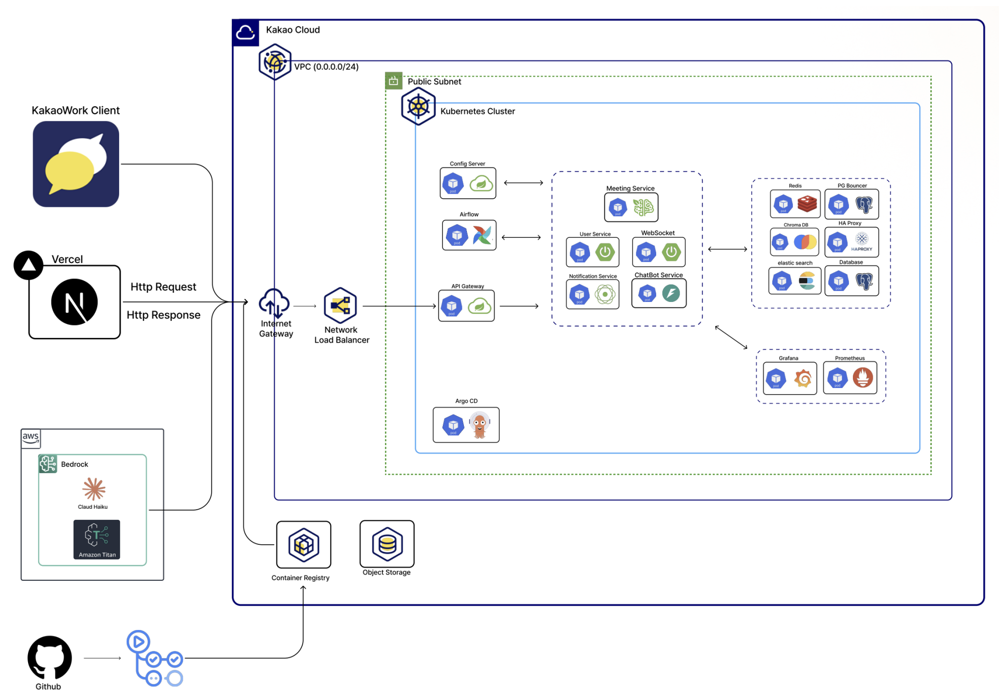
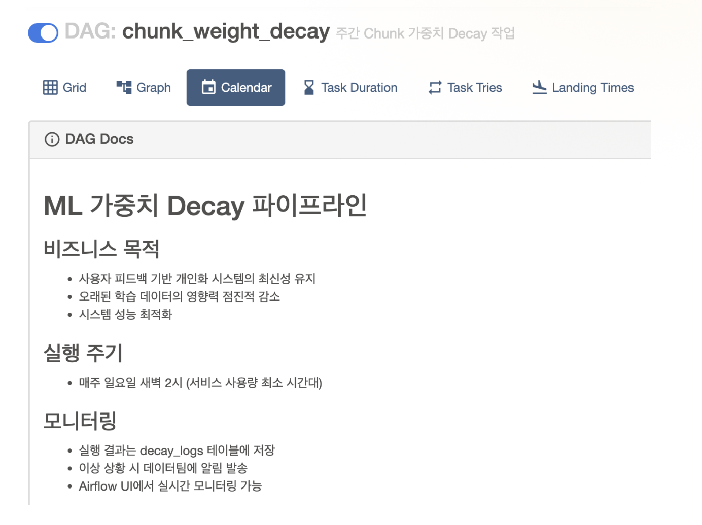
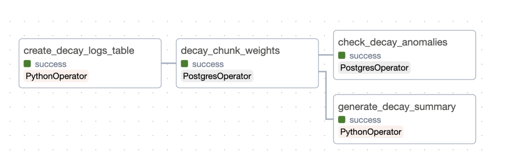

PROJECT 02 / AI SERVICE
Arah / DK Techin RAG
AI 서비스는 만들고 끝나는 것이 아니라,
계속 정확해야 합니다.
- 역할 / 작업
- Chunking 실험 · 피드백 구조 설계 · Airflow 자동화
- 기간
- 2025.07 — 2025.08
약 50개 테스트 질문
정답 문서의 Top-k 포함 여부로 chunking 방식을 비교했습니다.
DK Techin 우수 팀PROBLEM → DECISION
문서 구조와 피드백의 영향을 함께 고려했습니다.
문제 / PROBLEM
제목 중심 문서, 오래된 피드백
사내 규정 / FAQ 기반 RAG 챗봇에서 문서가 제목 중심으로 구성되어 있음을 분석했습니다. 오래된 feedback weight가 신규 문서를 밀어내는 문제도 고려했습니다.
선택 / DECISION
제목 기반 chunking과 시간 기반 weight decay
여러 chunking 방식을 비교해 제목 기반 방식을 적용했습니다. 오래된 피드백의 영향을 줄이기 위해 시간 기반 weight decay를 설계했습니다.
IMPLEMENTATION
검색부터 피드백까지 관리 흐름을 연결했습니다.
-
01
Document Structure & Chunking
제목 중심 문서 구조를 반영해 검색에 사용할 chunk를 구성했습니다.
-
02
Feedback Structure
사용자 평가와 문제 사유를 함께 저장하는 구조를 설계했습니다.
-
03
Weight Decay
오래된 feedback의 weight를 시간에 따라 감소시키도록 설계했습니다.
-
04
Airflow Automation
품질 관리 흐름을 Airflow로 자동화했습니다.



VERIFICATION / CHUNKING EXPERIMENT
약 50개의 질문으로 검색 결과를 비교했습니다.
여러 chunking 방식에 대해 정답 문서가 Top-k에 포함되는지를 평가 기준으로 삼았습니다. 테스트 질문 약 50개를 활용한 비교를 바탕으로 제목 기반 chunking을 적용했습니다.
RESULT
지속적으로 품질을 관리하는 AI 서비스를 설계했습니다.
제목 기반 chunking과 시간 기반 피드백 관리 흐름을 적용했습니다. DK Techin 우수 팀에 선정됐습니다.